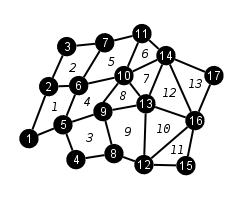
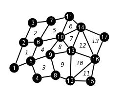

Rectangular and assumed connectivity. Just has axis co-ords.

Logical rectangular, but each node has i,j,k co-ord. Still assumed connectivity.
Explicit connectivity and shapes defined.

No connectivity graph.
A Mesh . Multiple meshes can be created within a single State. Data within the mesh and it's Material and Quant objects are centred - cell-centred, nodal-centred, edge (2/3D) or face (3D).
| Colinear Mesh Rectangular and assumed connectivity. Just has axis co-ords. |
|
| Non-Colinear Mesh Logical rectangular, but each node has i,j,k co-ord. Still assumed connectivity. |
|
| Unstructured Mesh Explicit connectivity and shapes defined. |
 |
| Point Mesh No connectivity graph. |
Co-ordinate systems can be Cartesian, Spherical polar, cylindrical polar or axisymmetric (2D)
This holds the mesh-wide Material values. Also acts as an index to mixed data for all quantities.
Mixed materials
And mesh-wide data that isn't the material can be stored as a Quant.
Variables are for holding any additional data that doesn't come under the remit of other objects or their metadata. They can be created within any other TyphonIO object, but Variables cannot be within other Variables.
Vargroups (variable groups) are simple container objects that hold any number of Variables, or further Vargroup objects. Variables do not necessarily have to be contained within Vargroups, but Vargroups are provided so the user can organise larger collections of Variables. Vargroups can be can be created in any of the following objects: File, Vargroup, State, Mesh, Material, Quant, Nodeset or Surface.
#include "typhonIO.h"use typhonIOFortan and C/C++ APIs are kept as identical as possible. Addition of "_f" to F90 API is the difference
C indices start at 0, F90 at 1
| Collective routines | independent routines | |
TIO_Create* |
TIO_CheckFile |
|
Simply include the path of the TyphonIO include directory for compiling. For linking need to link to TyphonIO library = typhonio for C and typhonio_f and typhonio for F90. Also need to link to HDF5 library and any other that may require (
-lz -lgpfs -lm)TIODIR = /prod/codes/typhon/typhonIO/parallel H5DIR = /global/hdf5/parallel ftn -I$(TIODIR)/include myprog.f90 -c -o myprog.o ftn myprog.o -L$(TIODIR)/lib -Ltyphonio_f typhonio -L$(H5DIR)/lib -lhdf5 -o myprog.x